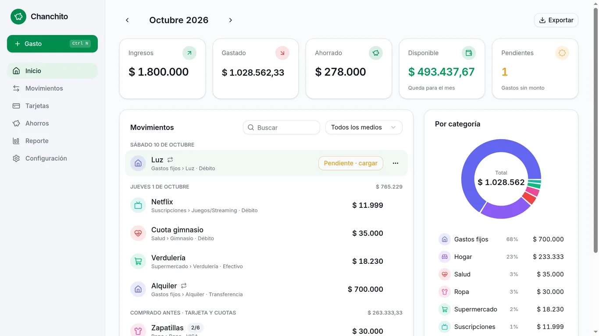
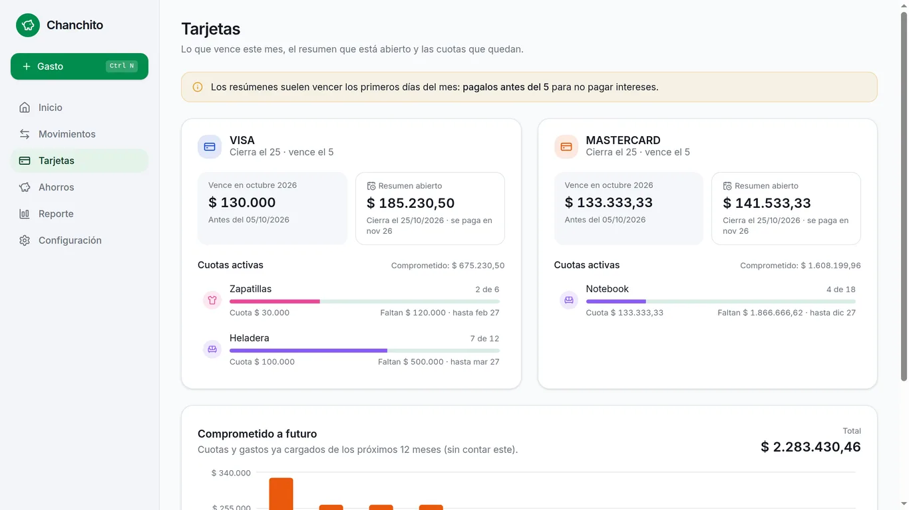
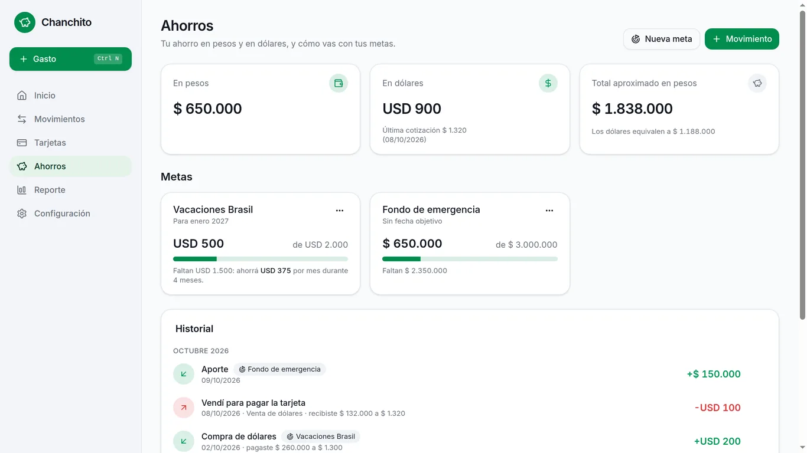
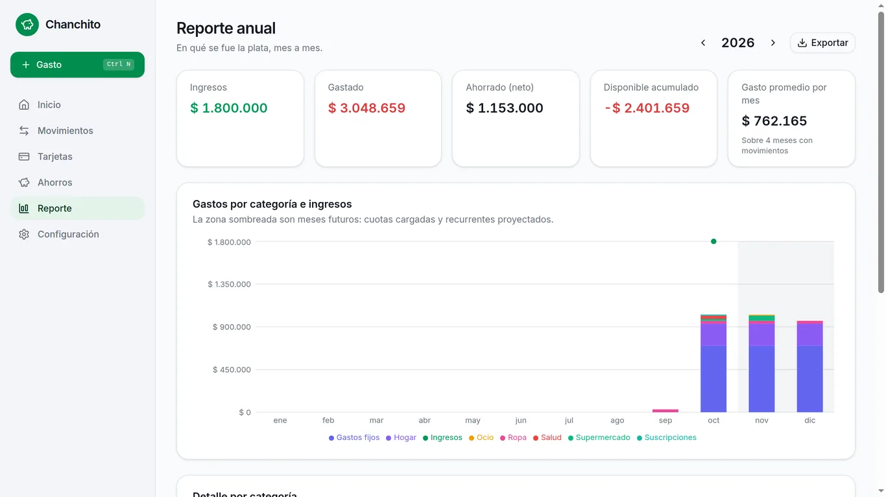
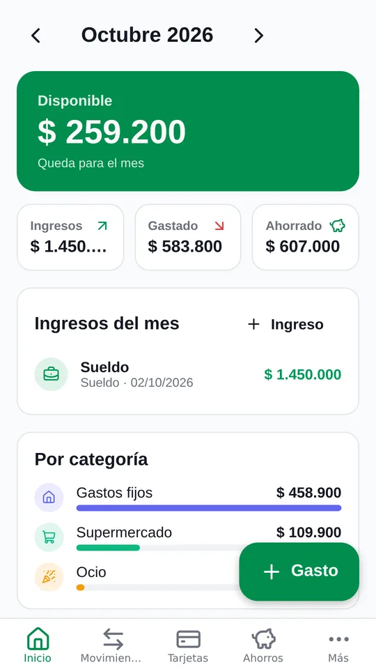
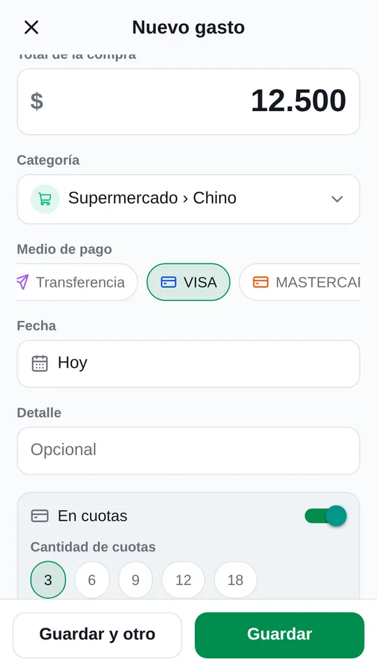
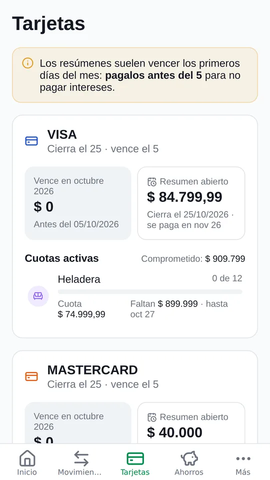

Sabé en qué se te va la plata cada mes.
Chanchito es una app de finanzas personales pensada para cómo pagamos en Argentina: tarjetas por fecha de cierre, cuotas, gastos fijos y ahorros en pesos y dólares.
Gratis, sin cuentas, sin publicidad. Tus datos quedan en tu equipo.

Lo que hace
Disponible del mes
Ingresos menos gastos y ahorro: cuánto te queda, de un vistazo.
Tarjetas bien resueltas
Lo que comprás con tarjeta cuenta en el mes en que pagás el resumen.
Cuotas a futuro
Cada compra en cuotas se proyecta y ves cuánto tenés comprometido.
Gastos fijos
Alquiler, servicios y suscripciones se cargan solos todos los meses.
Ahorros y metas
En pesos y en dólares, con compra y venta de USD y metas por mes.
Gastos compartidos
Armá grupos, anotá quién pagó y Chanchito calcula quién le debe a quién.
Reporte anual
Todo lo que ganaste, gastaste y ahorraste, por categoría, con exportación a Excel.
Backups
Backups automáticos, y el mismo archivo sirve para pasar tus datos de la PC al celu.
Así se ve






Tus datos son tuyos
Chanchito no tiene servidores ni cuentas. Todo lo que cargás queda guardado en tu computadora, tu celular o tu iPhone, sin analíticas, sin rastreadores y sin publicidad. Leé la política de privacidad.
Descargar
iPhone (iOS 16.4 o superior)
Abrila en Safari, tocá Compartir → Agregar a inicio y usala desde el ícono. Anda sin internet.
Abrir en SafariPreguntas frecuentes
¿Es gratis de verdad?
Sí. No tiene versión paga, ni publicidad, ni funciones bloqueadas.
¿Puedo usarla en la PC y en el celu?
Sí. Hacés un backup en un equipo y lo restaurás en el otro: el archivo es el mismo para Windows, Android e iPhone. Con el backup en Google Drive (opcional) es todavía más fácil.
¿Y si cambio de computadora o de celular?
Hacé un backup desde Configuración, pasalo al equipo nuevo y restauralo. Chanchito también guarda backups automáticos en tu equipo.
¿Por qué en iPhone no está en la App Store?
Para que siga siendo gratis: en iPhone es una web app que se instala desde Safari y funciona igual que una app, sin internet. Tus datos quedan en el iPhone. Ojo: si borrás el ícono se borran los datos, así que hacé backups (a Archivos o a Google Drive).
¿Hay versión para Mac?
No hay una app, pero podés usar la versión web desde Safari en app.chanchitoapp.com.ar.